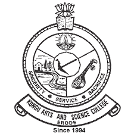
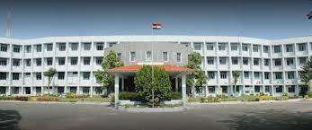

kongu Arts and Science College
Home
Info
Programmes
Departments
Libray
COE
Results
Admission
Other
The Kongu Arts and Science College is an arts and science college in Nanjanapuram, Erode, Tamil Nadu, India, founded in 1994.
AboutUS
COIMBATORE, the fast growing industrial hub of Kongunadu had the need for more colleges during the 70s, and this demand was fulfilled on 12th August 1973, the day on which Kongunadu Arts and Science College came into existence.


Address
Kongunadu Arts and Science College (Autonomous)
GN Mills, Coimbatore - 641029. Tamil Nadu, INDIA
(0) 422 2642095, 2642236, 2646588
info [@] kongunaducollege.ac.in
Visit Wikipedia.com!